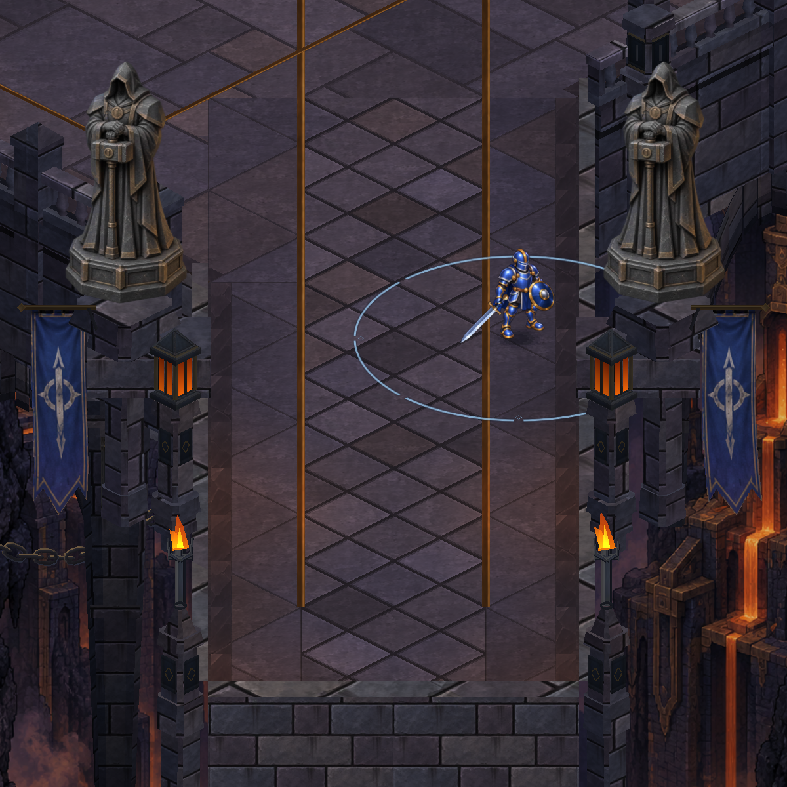
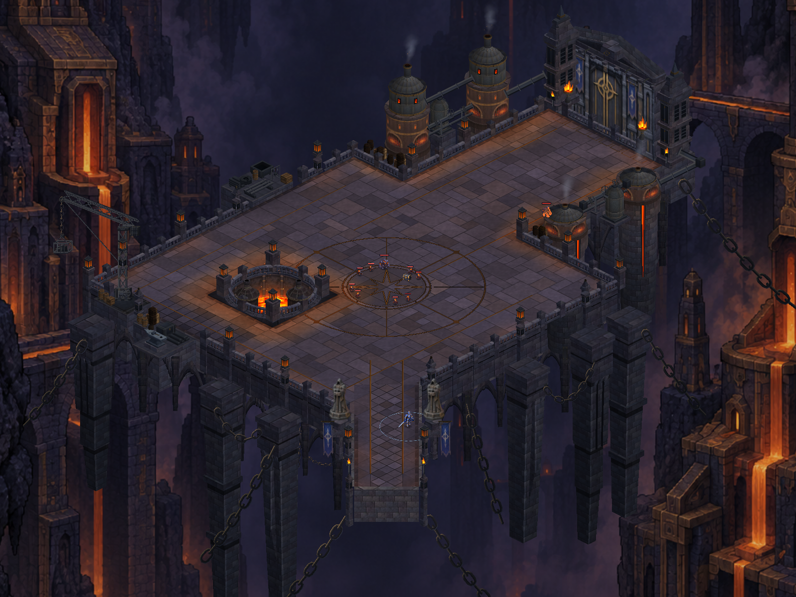
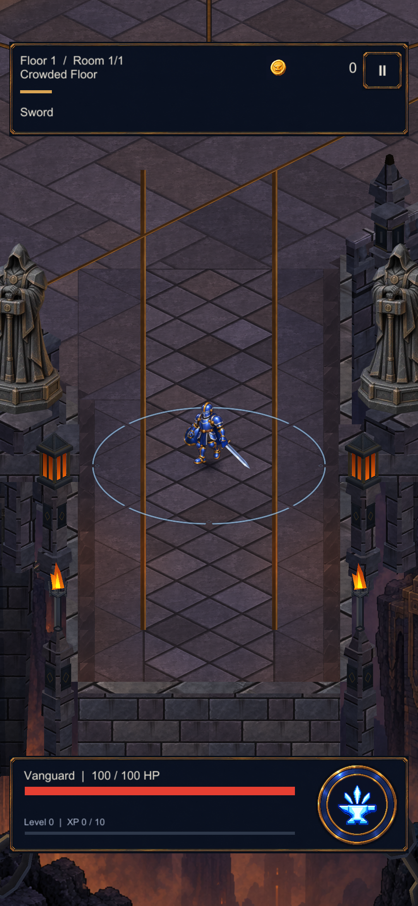
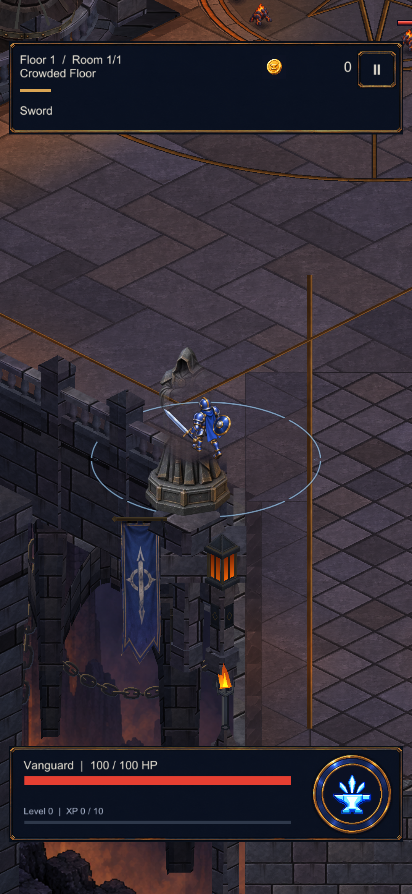
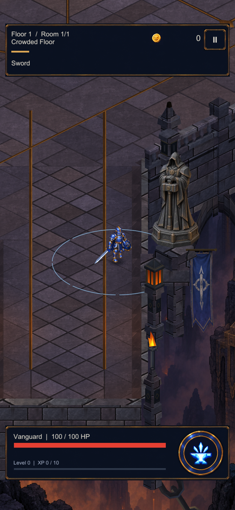

Köprü muhafızları
İki dökümhane muhafızı, taş konsollar ve yeniden yerleştirilen sancaklar. Görüntüler gerçek Unity sahnesinden; oynanış kamerası ve yürüyüş alanı korunuyor.

Yeni giriş silueti
Harita içindeki ölçekOyun kamerası ve karakter görünürlüğü

Köprü yaklaşımı
Avluda muhafız arkasındaki karakter
Sağ girişDoğrulama ve kapsam kaydı